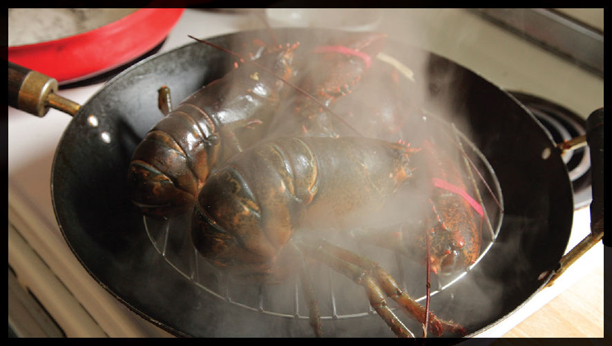
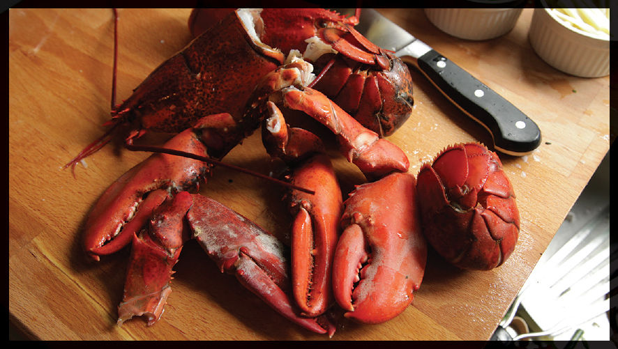
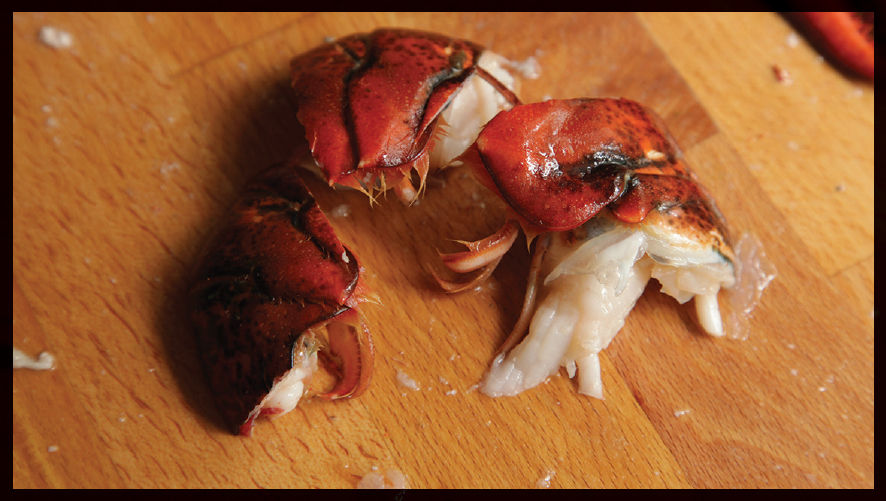
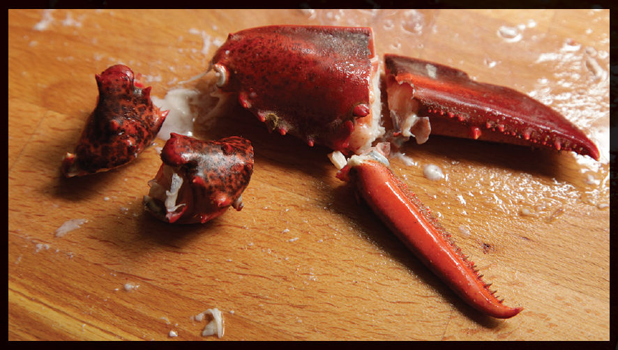
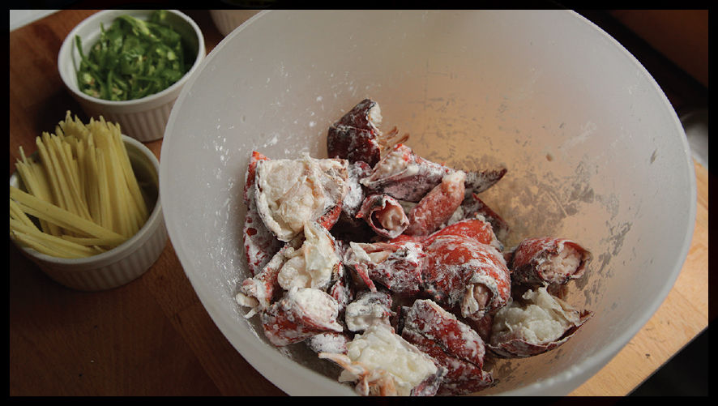
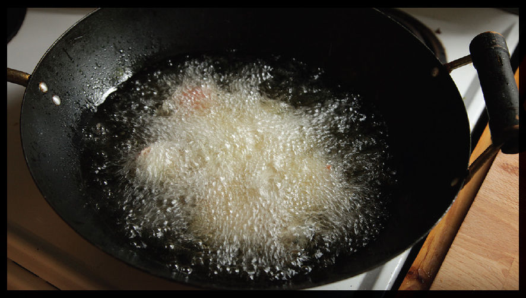
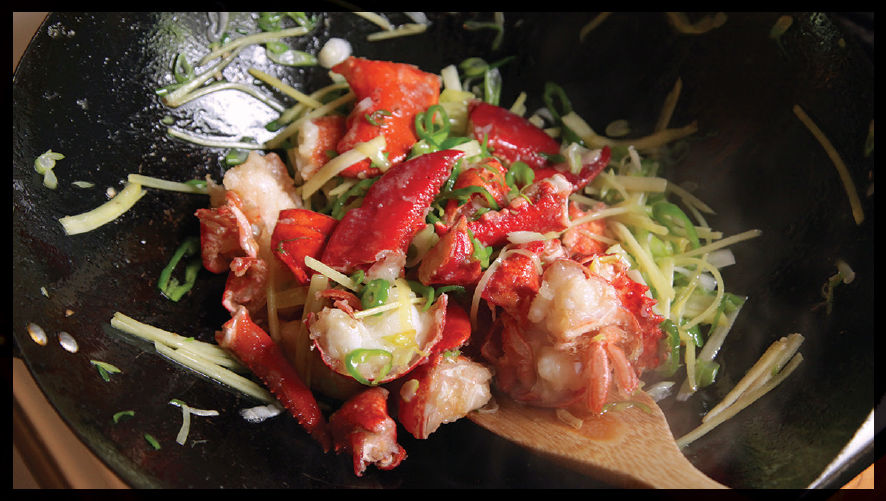

Cantonese-Style Stir-Fried Lobster, Step by Step
Step 1 • Steam the Lobsters

To kill a lobster, place the tip of a heavy knife in the center of the head. Plunge it into the head rapidly, splitting it between the eyes to instantly kill it.
The lobsters start with a quick steam, which you can do directly in the wok. Get the water boiling, add the lobsters, cover, and cook for just a few minutes to set the flesh.
Step 2 • Break Them Down

Step 3 • Chop the Tails

Cut the tails in half lengthwise, then split each half into three pieces.
Step 4 • Split the Claws

Cut the knuckles off the claws in between the joints. Remove the small pincher by breaking it off a bit and cutting through the meat and cartilage with the tip of a sharp knife. Split the large pincher in half with a heavy knife. If the shell is very tough, you may need to crack it with a cleaver or by placing it under a towel and rapping it hard with the back of a knife.
Step 5 • Toss with Starch

Toss the lobster pieces in cornstarch to coat.
Step 6 • Fry in Batches

Heat oil in the wok to 350° to 375°F and cook the lobster in batches, agitating it as it cooks. You want to cook just until it gets crisp, about a minute, then drain it immediately.
Step 7 • Stir-Fry the Aromatics

Heat the wok until smoking hot, then add the aromatics and start stir-frying, tossing them constantly.
Step 8 • Stir-Fry the Lobster

Add the lobster meat along with the sauce. Stir-fry just until the sauce has thickened and coats the lobster and vegetables in a glossy sheen. Don’t overcook that lobster!